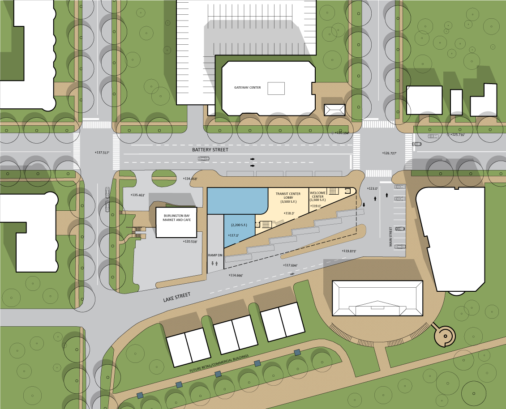
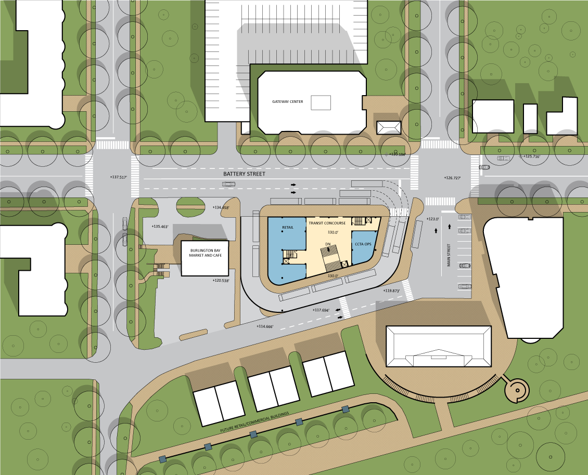
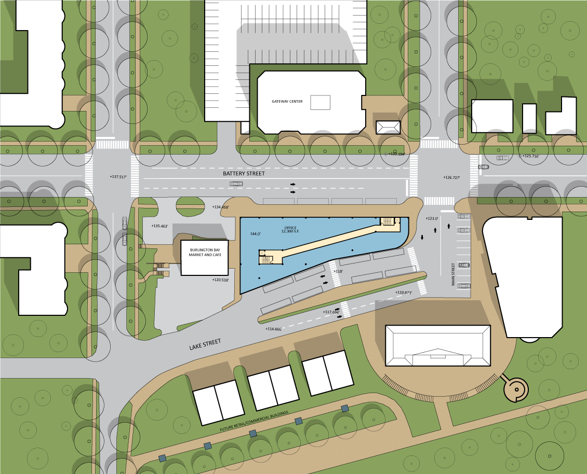
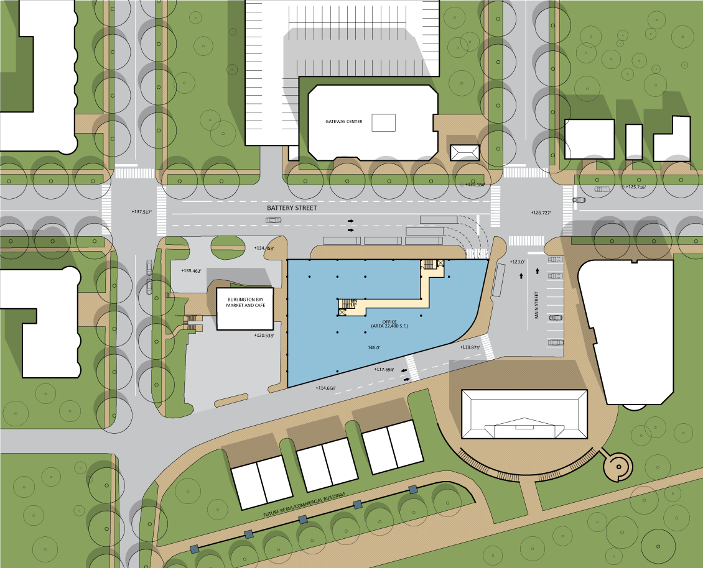

The big idea
The project grew from a larger City effort to create a new transit hub at the edge of downtown and the waterfront. The selected site sits between Battery Street, Lake Street, and Main Street near Union Station, the bike path, ferry service, and major bus routes. The design problem was therefore both operational and urban: make transfers easier while using the project to strengthen the connection between downtown and the waterfront.
Make transfers clear and efficient
Organize bus berths, passenger platforms, waiting areas, and the transit concourse so riders can move between services with minimal conflict.
Link Battery Street to Lake Street
Use the building and public circulation system to bridge the grade change between downtown and the lower waterfront.
Pair transportation with active uses
Integrate a welcome center, retail frontage, and office space so the project contributes to everyday street life beyond its transit function.
Layer parking into the same footprint
Fit public parking into the constrained site without allowing garage circulation to dominate the public face of the project.
Compare three organizational strategies
The drawing set tests three ways of arranging the same basic program. Each scheme uses the sloping site differently, changing the relationship among bus movement, passenger circulation, parking, retail frontage, the welcome center, and upper-level office space.


Use the section as an organizing tool
Because Battery Street sits above Lake Street, the building can operate as a piece of infrastructure as much as a conventional building. Parking, transit, public circulation, retail, and offices are stacked at different elevations, allowing each scheme to respond to grade while preserving usable street frontage.
Absorb the grade change
Multiple parking levels occupy the deeper portion of the site and connect to the street network at different elevations.
Keep passenger movement legible
Waiting, ticketing, circulation, and bus access are concentrated at the levels where riders can move most directly between streets and platforms.
Put activity on the street
Retail and the welcome center are positioned at visible street-facing locations rather than buried within the transportation structure.
Cap the system with flexible floor plates
Upper-level office space uses the full development footprint after the more constrained transit and parking functions have been resolved below.

Design the building as part of a larger district
The plans consistently treat the site as one piece of a broader downtown-waterfront framework. The Gateway Center, Burlington Bay Market and Cafe, Union Station area, streets, sidewalks, future development parcels, and landscaped public spaces remain visible in every study so the transportation center can be evaluated as urban fabric rather than as an isolated facility.

Study framework
The companion 2001 report describes a broader iterative design process that followed an earlier feasibility study and environmental assessment. It establishes the project goals and program; the drawings shown here focus specifically on the Boulevard, Internal, and Loop configurations contained in the supplied design set. The work is best understood as systems design—testing how movement, grade, structure, public space, and development can be solved together before a final architectural expression is fixed.